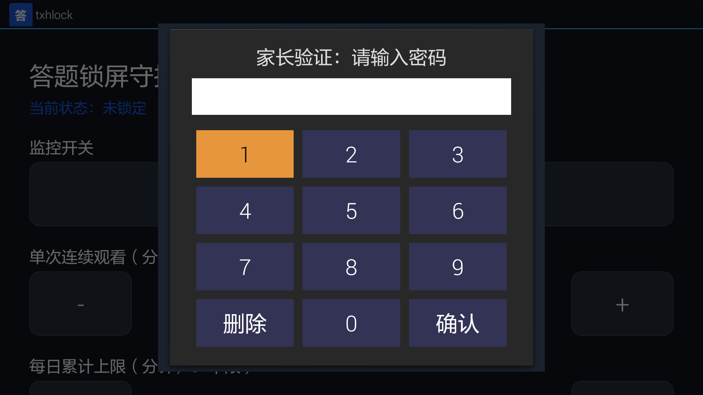
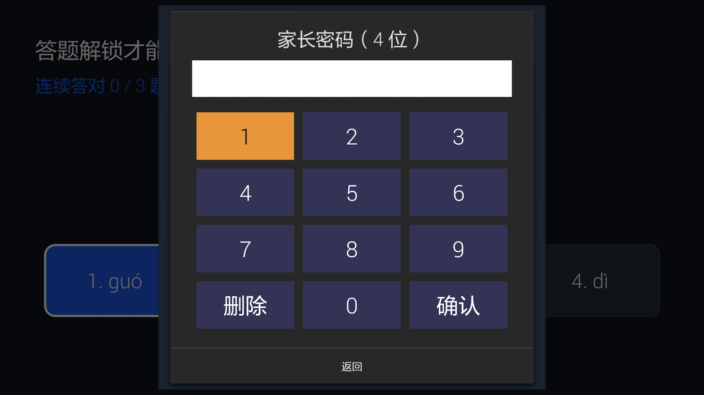
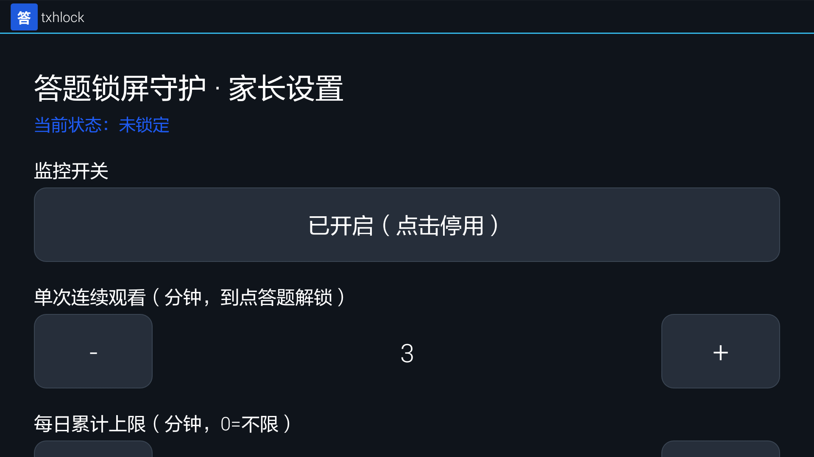
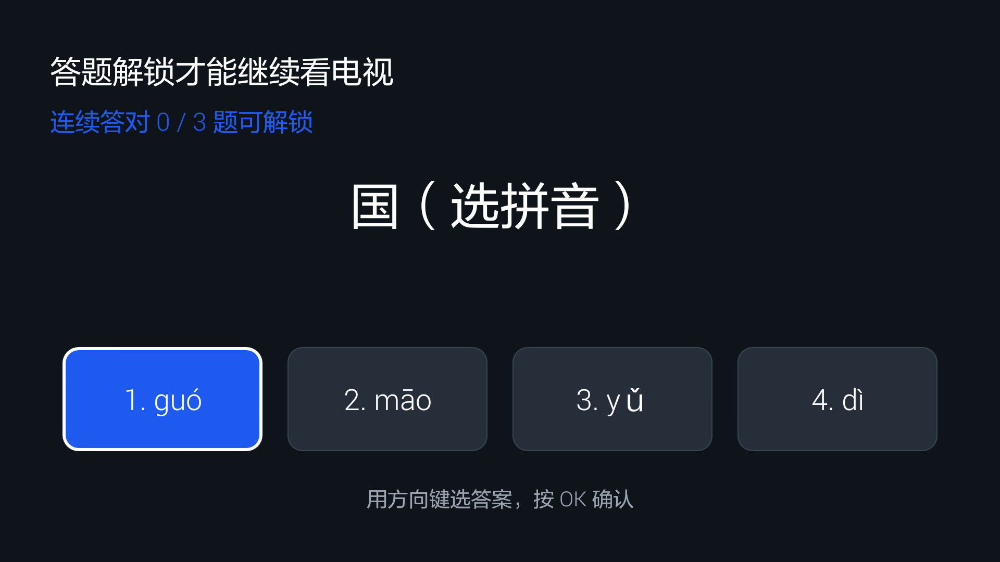

txhlock 答题锁屏 · 电视使用指南
给家长看的图文操作说明 —— 孩子看一段时间电视，必须先答对题才能继续看。
这是什么
安装在安卓电视（小米电视、峰米激光电视等）上的一个家长管控应用。核心逻辑：孩子看满设定时长 → 电视全屏锁定 → 遥控器连续答对 N 道题才能解锁继续看；家长随时可按遥控器【菜单键】输入密码直接解锁。
一、家长怎么设置
打开应用（桌面图标“txhlock”），会先要求输入家长密码（默认 1234）。

图1 · 打开应用后先输家长密码（默认 1234）
密码键盘是应用内置的数字键盘，用遥控器方向键移动（选中键会高亮橙色），按【OK】确认。

图2 · 数字键盘：方向键选中、OK 确认、右下角删除/确认
密码正确后进入家长设置界面：

图3 · 家长设置界面（当前状态、监控开关、单次/每日时长）
设置要点：所有选项都是加减/勾选即保存，设好后直接按遥控器【返回】退出即可，没有单独“保存”按钮。
| 设置项 | 含义 | 说明 |
|---|
| 监控开关 | 是否启用计时锁屏 | 显示“已开启（点击停用）”= 正在生效，后台计时 |
| 单次连续观看 | 一次连续看多久后锁屏答题 | 到点弹锁屏，孩子答题解锁后可继续看（循环） |
| 每日累计上限 | 一天总共能看多久 | 0 = 不限；到上限后当天不能再看（家长输密码可豁免），过午夜自动重置 |
| 连续答对题数 | 解锁需连续答对几道 | 范围 1～10，答错一次进度清零重来；默认 3 |
| 启用题型 | 出题范围 | 口算 / 认字（拼音）/ 古诗 / 英语 / 自定义，可多选 |
| 修改家长密码 | 换解锁密码 | 4～8 位数字 |
| SMB 同步设置 | 从电脑局域网同步题库 | 见“题库”章节 |
| 立即锁定测试 | 手动模拟一次锁屏 | 仅供家长测试答题流程用；测完记得答题或输密码解锁 |
二、孩子怎么用（看电视流程）
监控开启后，孩子正常看电视。看满“单次连续观看”的时长（例如 3 分钟），电视会自动弹出全屏答题锁屏：

图4 · 锁屏答题页：看满时间后自动弹出，顶部显示“连续答对 0/3 题可解锁”
- 顶部提示“答题解锁才能继续看电视”，并显示当前进度“连续答对 X / N 题可解锁”。
- 中间出题（拼音/口算/古诗/英语/自定义），下方 4 个选项。
- 用方向键选答案，按【OK】确认。
答对：绿色提示“✓ 回答正确”，进度 +1；连对满 N 题显示“✓ 回答正确，解锁成功！”并解锁。
答错：红色提示“✗ 回答错误，正确答案是：X”，进度清零，需重新连续答对。
解锁后回到之前看的画面继续看电视；计时会继续累计，到点再次锁屏。
三、解锁的两种方式
| 方式 | 操作 | 适用 |
|---|
| 孩子答题解锁 | 连续答对 N 道题 | 单次到点，孩子自己认真做对题就能继续看 |
| 家长密码直解 | 锁屏页按遥控器【菜单键】→ 输家长密码 | 每日额度已用完 / 孩子答不出 / 家长随时放行 |
每日额度已用完时：孩子答题无法解锁（会提示“今日观看时间已用完，请家长输入密码”），只有家长输密码才能当日继续看。
四、题库怎么放（本地 / 局域网 SMB）
本地题库：在电视内置存储的 /sdcard/Download/txhlock/ 目录放入 .txt 文件（一行一题，格式“题干|答案”，可用 [pinyin]/[english]/[poetry]/[custom] 分段）。放好后在设置里点【重新加载题库】。
SMB 局域网同步：设置里填电脑共享地址（服务器/共享名/账号/密码/子目录），打开应用自动同步；也可点【立即更新 SMB 题库】手动更新。更新结果会区分“成功 / 无需更新 / 连接失败”。
- 本地与 SMB 题库会自动合并、按“段+题干+答案”去重。
- 【卸载本地题库】可删除本地 txt，状态会显示“本地无题库”。
五、常见问题
- 监控已开启但显示“未锁定”？正常。“未锁定”指此刻没在锁屏，等看满时长才会锁。
- 电视重启后计时不生效？到电视系统设置里给 txhlock 打开“开机自启动”权限（国产电视常默认禁止）。
- 100 寸激光电视显示会变形吗？不会。全屏是按分辨率等比放大，比例正常；若是 4K 屏元素会偏小但可用。
- 高版本安卓能装吗？能。此应用兼容 Android 4.3 及以上所有版本。